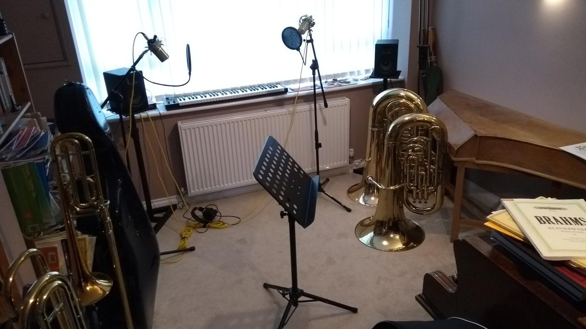

2020 Changes
I've spent today updating everything to do with ntoll.org. Many thanks to my buddy Kushal Das for the invaluable advice on various technical matters.
Here's what I've done:
- The website is run using Nikola ~ a Python based static site generator. It was very easy to migrate away from my previous hand-coded solution made with a custom Flask script and HTML.
- It's hosted on GitHub Pages which is both free and makes it very easy to manage code and deployment.
- I've switched email hosting to Fastmail, who made the whole migration process extraordinarily easy.
- I've archived the code for the old website for "safe keeping", even though all the content has moved over to the new site.
Lots of things have changed in addition to my own technical infrastructure.
I've just finished a very busy period of freelance work with two clients - the Freedom of the Press Foundation for whom I contributed Python code to an application for journalists, and NHSDigital for whom I fulfilled the remote role of a code mentor / developer coach (like an agile coach, but much more technical). I was collaborating with a team of Java developers who were learning Python and Django while building APIs for internal customers and users. I also provided Python training, which was very rewarding since I love teaching and the NHSDigital folks were already technically very strong and lots of fun. Both teams were exceptionally talented and friendly. I had a blast and made lots of new friends.
In just over a week I'll be starting a new gig with the Ministry of Justice as a senior Python engineer. I'm really looking forward to this since the work is useful, interesting and challenging. I'm looking forward to learning from my new colleagues and making contributions to our collective effort.
What does this mean for all my other projects (for instance CodeGrades or Mu)..? Ironically, I believe I'll have more rhythm to my day and so my work on these projects will continue in my own time, but at a more predictable pace. Watch this space. :-)
Finally, the current Corona virus pandemic is affecting life in rather unforeseen ways: my daughter and older son have had their summer exams cancelled. Apparently, their results will be based upon their predicted grades. It means my daughter is going to read Mathematics at university with a scholarship (dependent on her achieving her target grades, which she will in light of the current situation) and my son will have the grades needed to go onto study Physics, Maths, Music and Design Technology at "A" level (his current plan is to read engineering at university). My youngest son continues school lessons, completed at home via an online platform.
We've also had to purchase some home-studio equipment (mics, pre-amp, monitor speakers, midi keyboard and related audio software). Mary, my wife, uses this to teach her many instrumental students remotely via video calls. It soon became apparent that laptop or mobile phone mics are not great for cello or piano teaching. Happily, the new equipment is proving to be a great success and Mary is able to continue teaching most students without disruption and from the comfort of our own music room:

It also means I have the equipment available to produce my own (Python) training materials and the kids are having a great time mixing all sorts of different types of music.
Here's hoping you stay safe and remain healthy during this challenging time. Since most of us are in lock-down, don't hesitate to get in touch if you fancy a chat..! Social distancing rules don't mean you have to be anti-social.
:-)